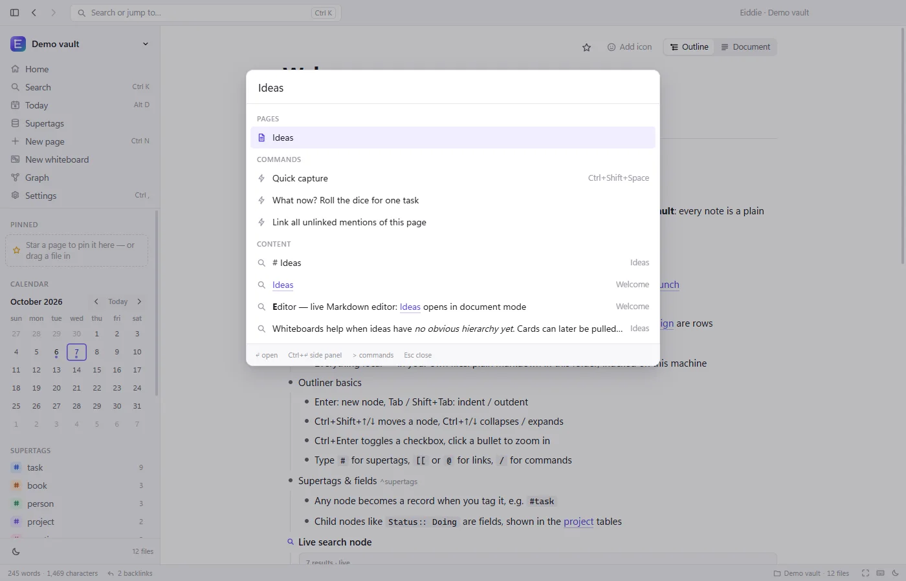
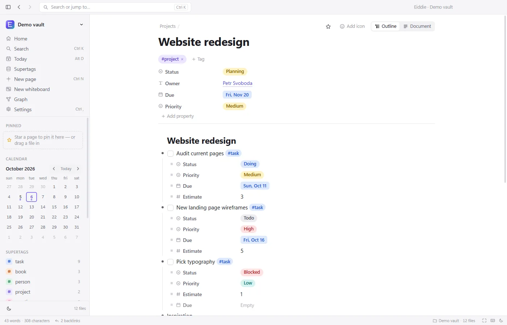
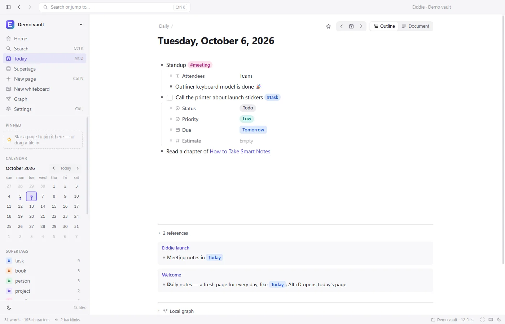
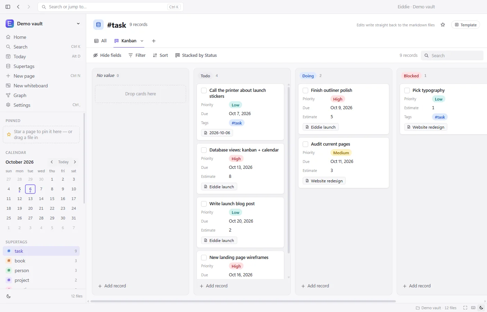
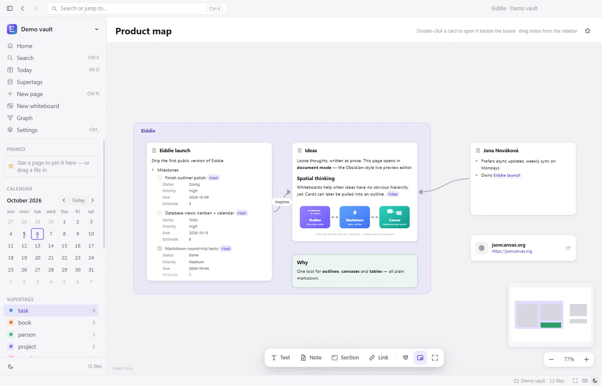
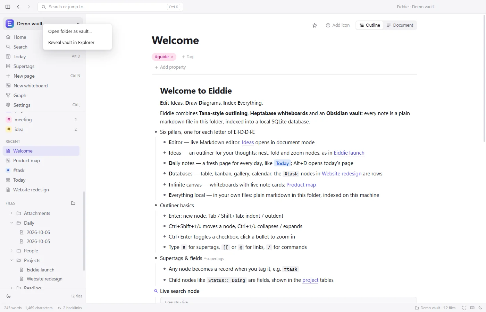

Začínáme s aplikací Eiddie
Šest věcí, dvě minuty: tytéž kroky najdeš v aplikaci v seznamu Začínáme.
Editor · krok 1 ze 6
Skoč kamkoli přes Ctrl+K
Stiskni Ctrl+K, napiš „Ideas“ a dej Enter. Stejně rychle se dostaneš ke každé stránce i příkazu, takže myš skoro nepotřebuješ. Ctrl+E pak přepne stránku z odrážek (outliner) na dokument s živým Markdownem a zpátky.

Ideas · krok 2 ze 6
Udělej z odrážky záznam: #task
Otevři stránku „Website redesign“, pod poslední odrážku napiš úkol a přidej #task (takovému štítku se říká supertag). Z odrážky se stane záznam s poli jako „Status“ nebo „Due“ a objeví se v databázi všech úkolů. V souboru přitom zůstane obyčejným řádkem Markdownu.

Daily notes · krok 3 ze 6
Otevři dnešní stránku: Alt+D
Stiskni Alt+D nebo klikni na „Today“ v postranním panelu. Každý den má svou stránku: piš sem myšlenky, schůzky i úkoly a roztřiď je později. Rychlý nápad zapíšeš do dnešní stránky kdykoli v aplikaci přes Ctrl+Shift+Mezerník, ať zrovna děláš cokoli.

Databases · krok 4 ze 6
Zobraz úkoly jako Kanban
Otevři databázi „task“ (v postranním panelu pod „Supertags“), klikni na „+“ vedle záložek pohledů a vyber „Kanban“. Karty jsou úkoly ze všech stránek, včetně toho z kroku I. Když kartu přetáhneš do jiného sloupce, změní se její „Status“ rovnou v souboru Markdown.

Infinite canvas · krok 5 ze 6
Otevři tabuli
Otevři „Product map“ (i tady funguje Ctrl+K). Dvojklikem na prázdné místo přidáš kartu, poznámku přetáhneš na tabuli ze seznamu souborů v postranním panelu. Karty poznámek nejsou kopie: dvojklik otevře poznámku vedle tabule a co v ní změníš, uvidíš i na kartě.

Everything local · krok 6 ze 6
Poznámky máš v souborech u sebe
Klikni vlevo nahoře na název složky a zvol „Reveal vault in Explorer“: obyčejné soubory v běžné složce, stránky v Markdownu (.md) a tabule jako .canvas. Zálohuj a synchronizuj je, jak chceš. Poznámky nikam neodcházejí, aplikace se jen ptá GitHubu, jestli je nová verze (dá se vypnout v Settings → Updates).

Klávesové zkratky
Ty, které se hodí od prvního dne. Úplný seznam ukáže v aplikaci kdykoli Ctrl+/.
| Zkratka | Co udělá |
|---|---|
| Pohyb po aplikaci | |
| Ctrl+K | Hledání: stránky, obsah i příkazy |
| Ctrl+O | Skok na stránku |
| Ctrl+N | Nová stránka |
| Alt+D | Dnešní stránka |
| Ctrl+Shift+Mezerník | Rychlý zápis, kdykoli v aplikaci |
| Ctrl+Shift+F | Hledání s dotazovacím jazykem |
| Alt+← / Alt+→ | Zpět / vpřed |
| Ctrl+\ | Skrýt nebo ukázat postranní panel |
| F11 | Režim soustředění |
| Ctrl+, | Nastavení |
| Ctrl+/ | Všechny klávesové zkratky |
| Stránky a outliner | |
| Ctrl+E | Přepnout mezi outlinerem a dokumentem |
| Ctrl+klik | Otevřít odkaz v bočním panelu |
| Enter / Shift+Enter | Nová odrážka / nový řádek |
| Tab / Shift+Tab | Zanořit / vynořit |
| Ctrl+Shift+↑ ↓ | Posunout odrážku nahoru nebo dolů |
| Ctrl+↑ ↓ | Sbalit / rozbalit |
| Alt+→ | Zoom do odrážky |
| Ctrl+Enter | Přidat, odškrtnout nebo odebrat zaškrtávátko |
| # [[ @ / | Supertag, odkaz, zmínka, příkaz |
| Psaní | |
| Ctrl+B / Ctrl+I | Tučně / kurzíva |
| Ctrl+Shift+H | Zvýraznění |
| Ctrl+Z / Ctrl+Shift+Z | Zpět / znovu |
| Ctrl+F | Hledat v dokumentu |
Přecházíš z…?
Co už znáš a kde to najdeš v aplikaci Eiddie.
-
Obsidian
ZnášVault ze souborů Markdown, [[odkazy]] a zpětné odkazy, Canvas, pole
Field:: valuez Dataview.V aplikaci EiddieOtevři složku vaultu tak, jak je. Odkazy a zpětné odkazy fungují stejně, tabule používají stejný formát JSON Canvas a
Status:: Doingpod odrážkou se stane polem v databázi. Nastavení si aplikace Eiddie ukládá do.eiddie/, vedle.obsidian/. -
Tana
ZnášUzly, supertagy s poli, vyhledávací uzly, stránku pro každý den.
V aplikaci EiddieKaždá odrážka je uzel a #supertag z ní udělá záznam s poli. Živé vyhledávání je odrážka jako
{{search: #task Status != Done}}, dnešní stránka je na Alt+D. Všechno se ukládá jako obyčejné soubory Markdown na tvém disku. -
Heptabase
ZnášTabule, na kterých jsou karty tvoje poznámky, sekce, otevření karty vedle tabule.
V aplikaci EiddieInfinite canvas: karta poznámky je ta poznámka sama, ne kopie, a dvojklik ji otevře vedle tabule. „Section“ seskupí karty. Každá tabule je jeden soubor
.canvasve tvé složce. -
Notion
ZnášDatabáze s pohledy tabulka, nástěnka, galerie a kalendář; stránky; příkazy za /.
V aplikaci EiddieKaždý supertag je databáze s pohledy Grid, Kanban, Gallery a Calendar. Záznamem může být jakákoli odrážka na jakékoli stránce, ne jen řádek v jedné tabulce. / otevře příkazy v outlineru a všechno funguje offline, bez účtu.
Něco nejde, nebo ti něco chybí?
Napiš mi, čtu každou zprávu. Nejvíc pomůže snímek obrazovky.